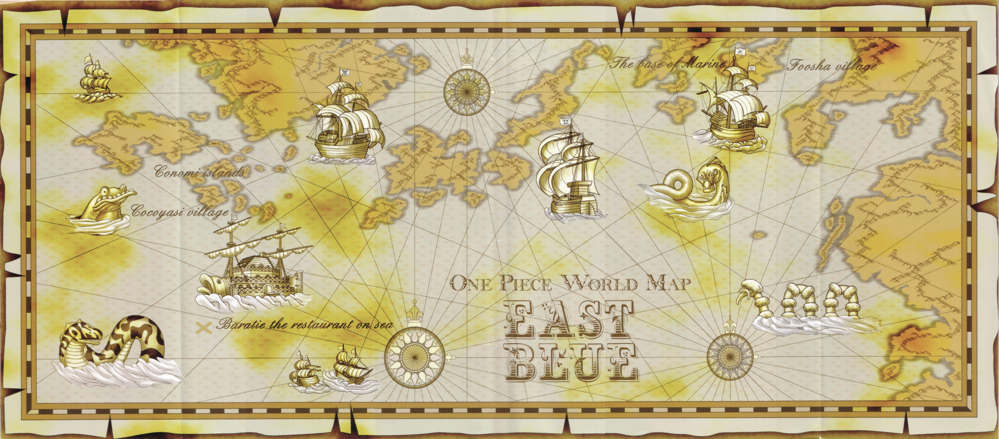

The East Blue is the ocean which makes up the east part of the Blue Sea split by the Red Line and the Grand Line. It is separated from the North Blue by the Red Line and the South Blue by the Paradise half of the Grand Line. It is also the first region that Monkey D. Luffy and his crew explore in their journeying.
The East Blue Saga is both the first saga and introductory saga of the manga and anime One Piece. Monkey D. Luffy meets the Red Hair Pirates as a young boy living in East Blue, swearing to become the next Pirate King. 10 years later, Luffy sets sail and experiences his first adventures while recruiting the initial members of the his pirate crew.

The One Piece Wiki Fandom website has more information about the East Blue Saga and its characters.